| Name | Image | Rarity | Type | Cost | Description |
|---|
| Blessed Cloak |  | Basic | Skill | 1 | Gain 6 (9) Block. thetemplar:Blessing: Gain 3 additional Block. |
| Defend |  | Basic | Skill | 1 | Gain 5 (8) Block. |
| Righteous Blow |  | Basic | Attack | 2 (1) | Deal 9 damage. thetemplar:Inscribe 1 thetemplar:Justice. |
| Strike | 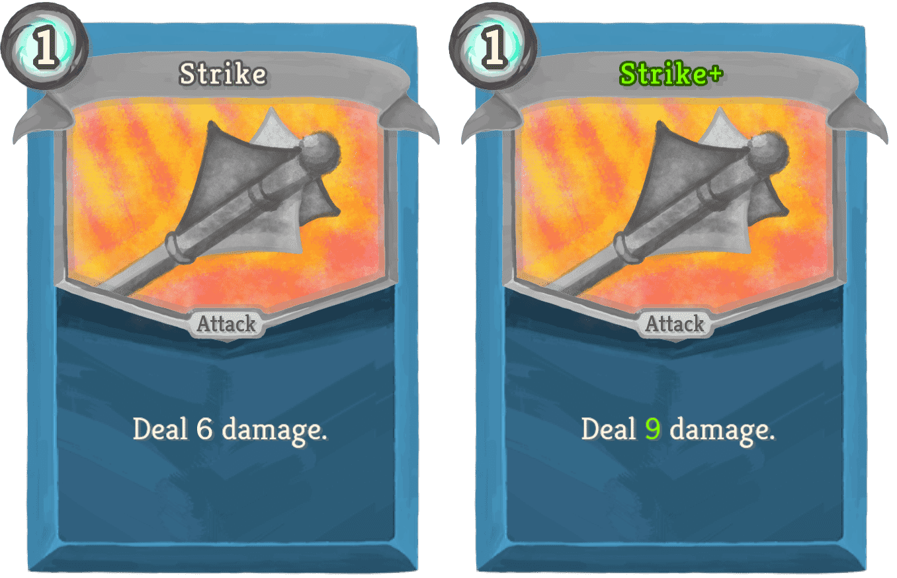 | Basic | Attack | 1 | Deal 6 (9) damage. |
| Blessed Strike |  | Common | Attack | 1 | Deal 9 (10) damage. thetemplar:Blessing: Deal 3 (6) additional damage. |
| Courageous Attack |  | Common | Attack | 1 | Deal 9 (12) damage. thetemplar:Blessing: thetemplar:Inscribe 1 thetemplar:Valor. |
| Devoted Strike | 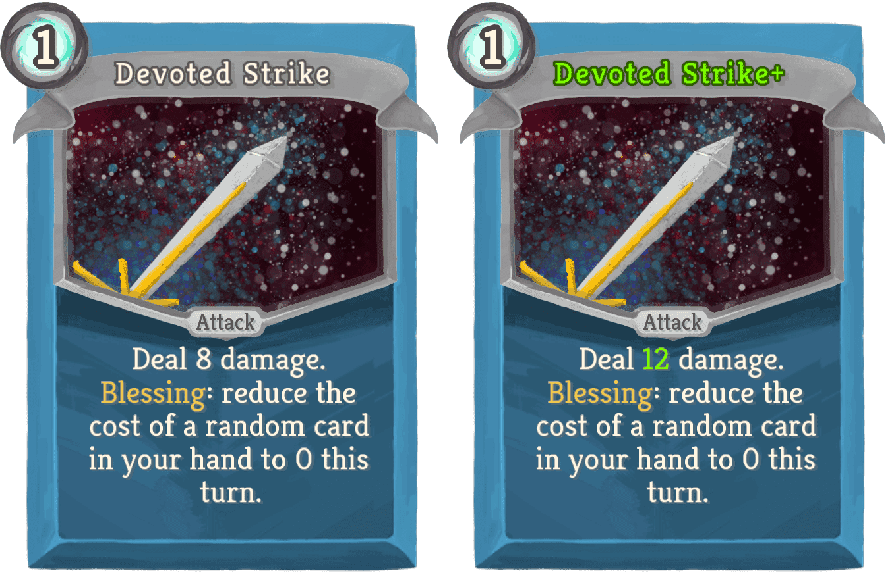 | Common | Attack | 1 | Deal 8 (12) damage. thetemplar:Blessing: reduce the cost of a random card in your hand to 0 this turn. |
| Endure |  | Common | Skill | 1 | Gain 7 (10) Block. thetemplar:Blessing: Draw 2 cards. |
| Fervor |  | Common | Skill | 1 | Draw 1 (2) card(s), then Exhaust 1 card. thetemplar:Inscribe 1 thetemplar:Zeal. |
| Fire of Conviction |  | Common | Attack | 0 | Deal 5 (9) damage. thetemplar:Inscribe 1 thetemplar:Zeal. Exhaust. |
| Holy Strike |  | Common | Attack | 0 | Deal 4 (6) damage. Whenever you thetemplar:Inscribe a thetemplar:Zeal or thetemplar:Valor, return this from the discard pile to your Hand. |
| Hymn |  | Common | Skill | 1 | If you have a glyph thetemplar:Inscribed, thetemplar:Inscribe an additional glyph of that type.(Otherwise, thetemplar:Inscribe a random glyph.) |
| Momentum |  | Common | Attack | 2 | Deal 10 damage. Vigor is not consumed by this card and affects it 2 (3) times. |
| Rally |  | Common | Skill | 1 | thetemplar:Inscribe 1 thetemplar:Valor and 1 thetemplar:Fortitude. Exhaust. (not Exhaust.) |
| Rebuff | 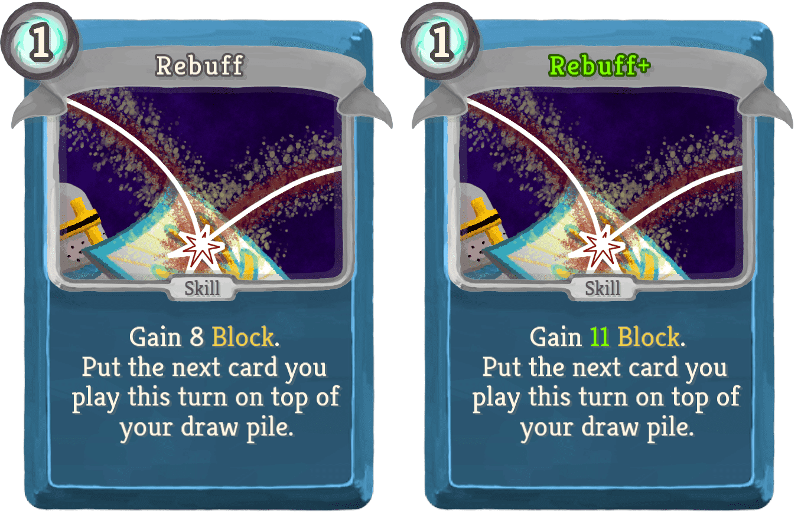 | Common | Skill | 1 | Gain 8 (11) Block. Put the next card you play this turn on top of your draw pile. |
| Rebuke |  | Common | Skill | 1 | thetemplar:Inscribe 1 (2) thetemplar:Justice. |
| Reckless Sweep |  | Common | Attack | 1 | Deal 8 (12) damage to ALL enemies. thetemplar:Inscribe 1 thetemplar:Zeal. Gain 1 Frail. |
| Redoubt |  | Common | Skill | 1 | Gain 5 (8) Block. thetemplar:Inscribe 1 thetemplar:Fortitude. |
| Sanctuary |  | Common | Skill | 1 | Gain 6 (9) Block. thetemplar:Blessing: thetemplar:Inscribe 1 thetemplar:Charity. |
| Shield Bash |  | Common | Attack | 1 | Gain 4 (6) thetemplar:Bulwark. Deal damage equal to your thetemplar:Bulwark. |
| Skirmish |  | Common | Attack | 1 | Deal 6 (9) damage. thetemplar:Inscribe 1 thetemplar:Fortitude. |
| Wait for an Opening | 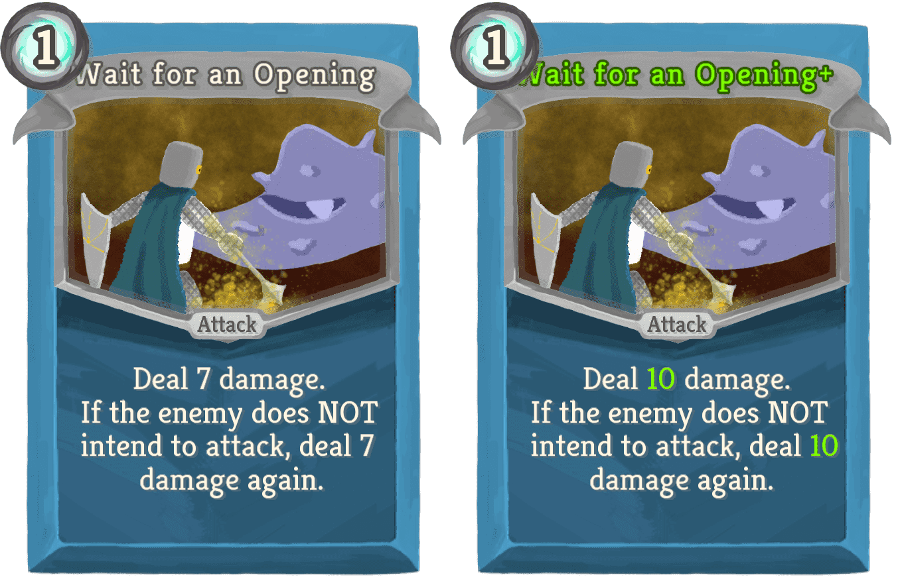 | Common | Attack | 1 | Deal 7 (10) damage. If the enemy does NOT intend to attack, deal 7 (10) damage again. |
| Word of Power |  | Common | Attack | 1 | Deal 6 (9) damage. Draw 1 card for each unique glyph type thetemplar:Inscribed this combat. |
| Alms | 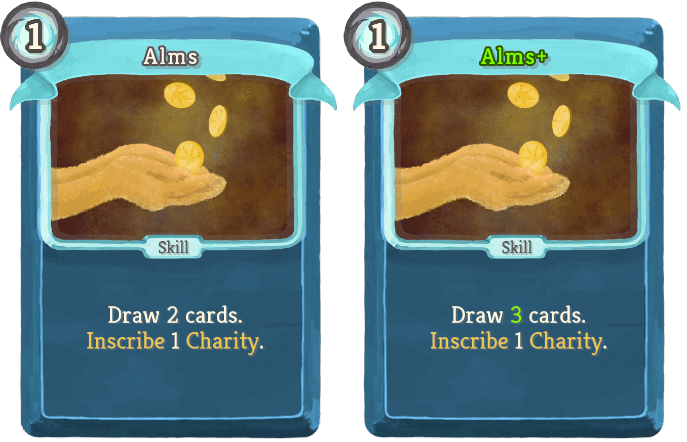 | Uncommon | Skill | 1 | Draw 2 (3) cards. thetemplar:Inscribe 1 thetemplar:Charity. |
| Altar |  | Uncommon | Power | 2 (1) | If you have a non-Zeal glyph thetemplar:Inscribed at the end of your turn, thetemplar:Inscribe 1 additional glyph of that type. |
| Awakening |  | Uncommon | Skill | 0 | Gain 3 (6) Block. If you have triggered a thetemplar:Blessing this turn, draw 2 cards. |
| Bastion |  | Uncommon | Skill | 2 | Gain 14 (18) thetemplar:Bulwark. Exhaust. |
| Battle Tactics |  | Uncommon | Power | 1 | If you have played exactly 1 Attack during your turn, thetemplar:Inscribe 1 (2) thetemplar:Justice at the end of your turn. |
| Beseech | 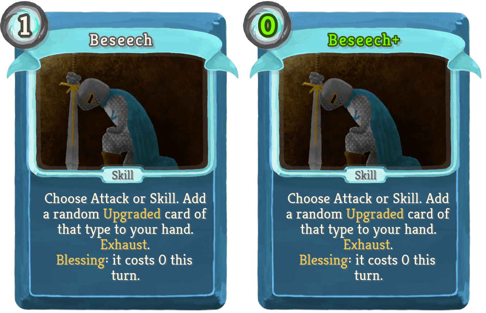 | Uncommon | Skill | 1 (0) | Choose Attack or Skill. Add a random Upgraded card of that type to your hand. Exhaust. thetemplar:Blessing: it costs 0 this turn. |
| Blades of the Fallen |  | Uncommon | Attack | 2 | Ethereal. Deal 5 damage 3 (4) times. Ignores Block. |
| Calculated Strike | 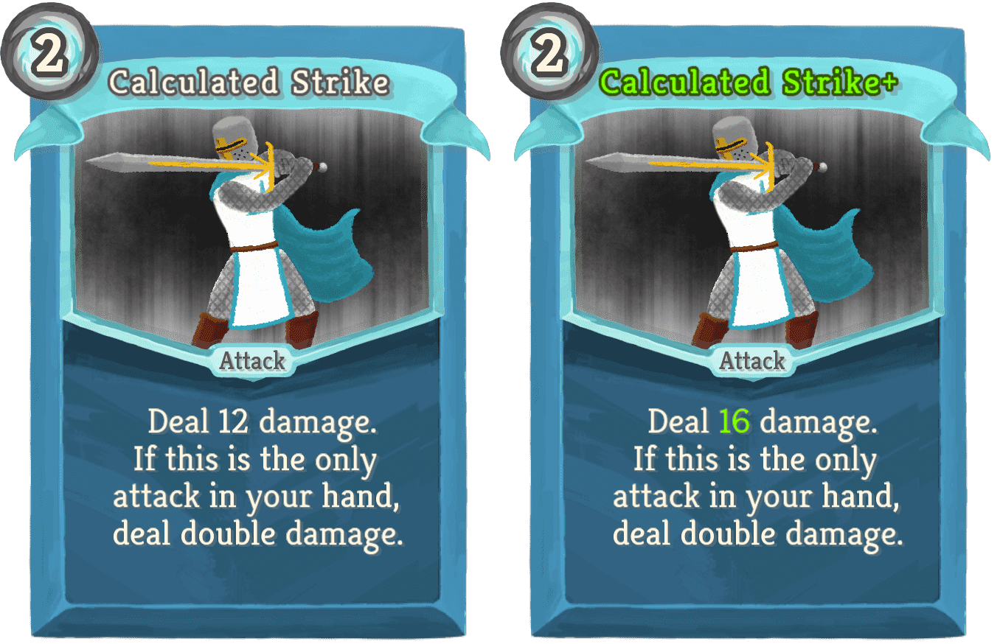 | Uncommon | Attack | 2 | Deal 12 (16) damage. If this is the only attack in your hand, deal double damage. |
| Celestial Burst |  | Uncommon | Attack | 1 | Deal 10 damage. thetemplar:Blessing: draw 2 (3) cards. |
| Cleansing Rite |  | Uncommon | Power | 1 (0) | At the end of your turn, Exhaust 1 random Curse or Status card. If you do, thetemplar:Inscribe 1 thetemplar:Charity. |
| Desperate Prayer |  | Uncommon | Skill | 0 | Choose a card in your hand and discard the rest. The chosen card (costs 0 and) always triggers thetemplar:Blessing this turn. |
| Determined Charge |  | Uncommon | Attack | 2 | Deal 10 (14) damage. thetemplar:Inscribe 2 thetemplar:Fortitude. |
| Divine Purpose |  | Uncommon | Power | 1 | (Innate.)At the start of your turn, thetemplar:Inscribe 1 thetemplar:Zeal. |
| Etch in Faith | 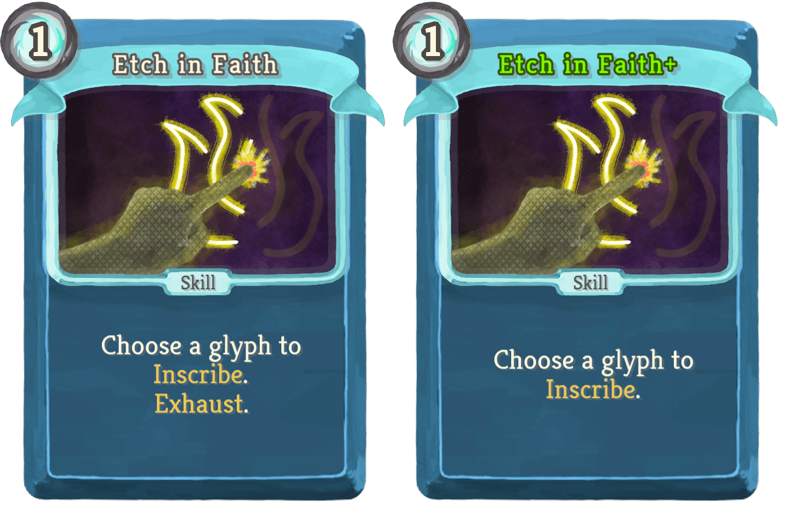 | Uncommon | Skill | 1 | Choose a glyph to thetemplar:Inscribe. Exhaust. (not Exhaust.) |
| Fanaticism | 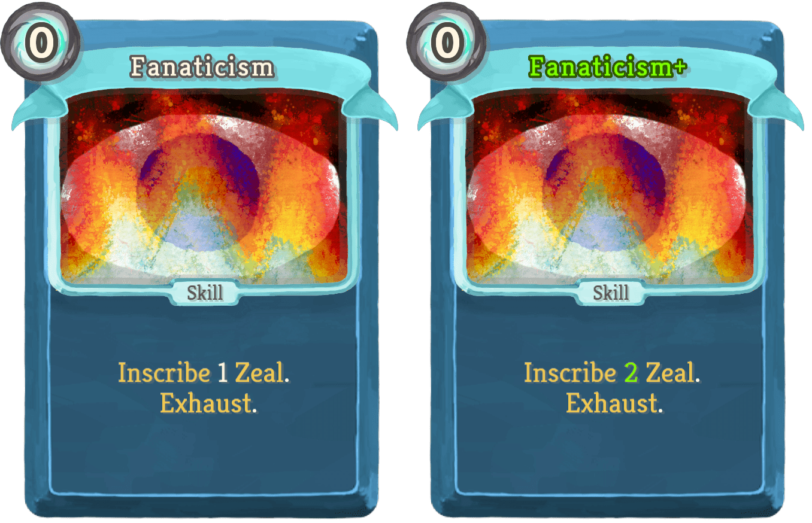 | Uncommon | Skill | 0 | thetemplar:Inscribe 1 (2) thetemplar:Zeal. Exhaust. |
| Fearless Assault |  | Uncommon | Attack | 1 | Deal 9 (12) damage. If the enemy is thetemplar:Empowered, thetemplar:Inscribe 1 (2) thetemplar:Valor. |
| Gallantry | 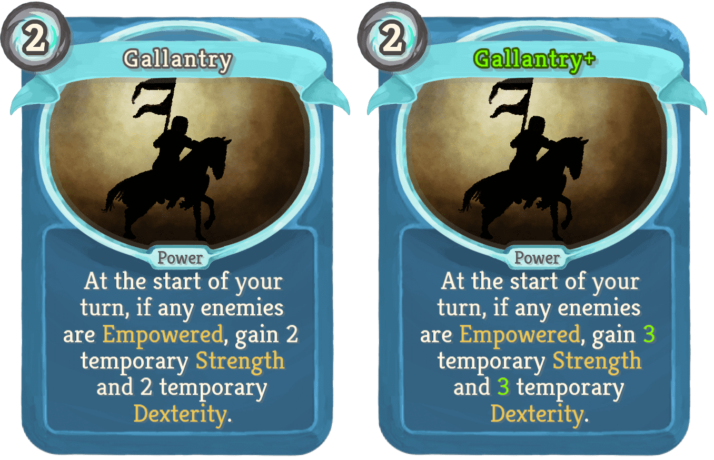 | Uncommon | Power | 2 | At the start of your turn, if any enemies are thetemplar:Empowered, gain 2 (3) temporary Strength and 2 (3) temporary Dexterity. |
| Gather Courage | 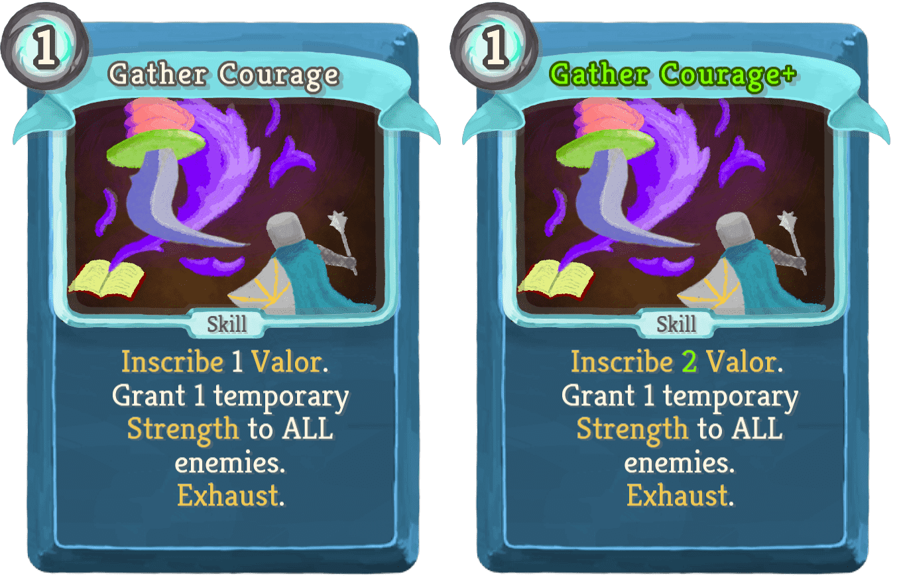 | Uncommon | Skill | 1 | thetemplar:Inscribe 1 (2) thetemplar:Valor. Grant 1 temporary Strength to ALL enemies. Exhaust. |
| Heroic Stand |  | Uncommon | Skill | 1 | Gain 7 (10) Block. If any enemy is thetemplar:Empowered, gain twice as much. |
| Holy Light |  | Uncommon | Skill | 0 | Gain 2 (3) temporary Strength and 2 (3) temporary Dexterity. |
| Imbued Armor |  | Uncommon | Skill | X | Gain 3 (5) Vigor and 4 (6) Block X times. |
| Innervate |  | Uncommon | Skill | 0 | Gain [E]. thetemplar:Blessing: gain additional [E] ([E]). |
| Light of Glory | 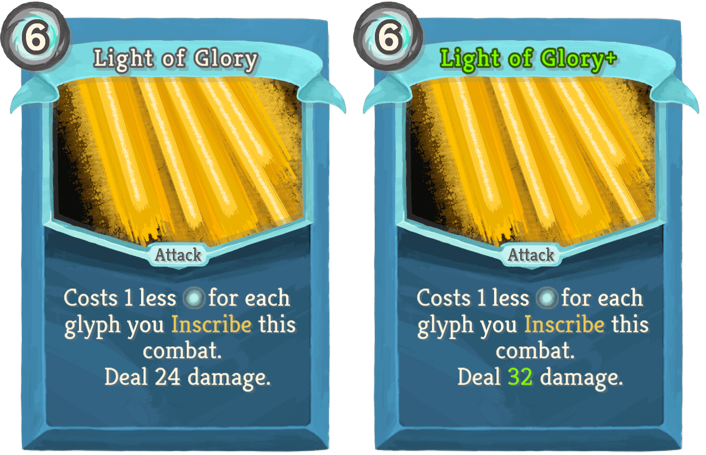 | Uncommon | Attack | 6 | Costs 1 less [E] for each glyph you thetemplar:Inscribe this combat. Deal 24 (32) damage. |
| Protective Blessing |  | Uncommon | Power | 1 | Gain 4 (6) Block whenever you trigger a thetemplar:Blessing. |
| Providence | 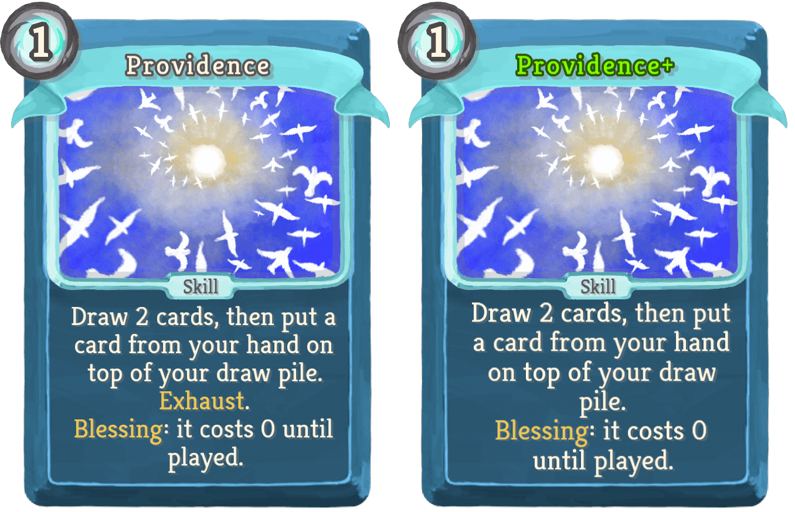 | Uncommon | Skill | 1 | Draw 2 cards, then put a card from your hand on top of your draw pile. Exhaust. (not Exhaust.) thetemplar:Blessing: it costs 0 until played. |
| Radiance |  | Uncommon | Attack | 1 | Deal 6 damage. Deals 2 (3) additional damage for ALL your cards with thetemplar:Blessing. |
| Reckoning |  | Uncommon | Attack | 2 | Deal 10 (15) damage. thetemplar:Inscribe 2 thetemplar:Justice. |
| Resolute Will |  | Uncommon | Power | 1 | Increase the effect of thetemplar:Justice and thetemplar:Fortitude by 3 (4). |
| Respite | 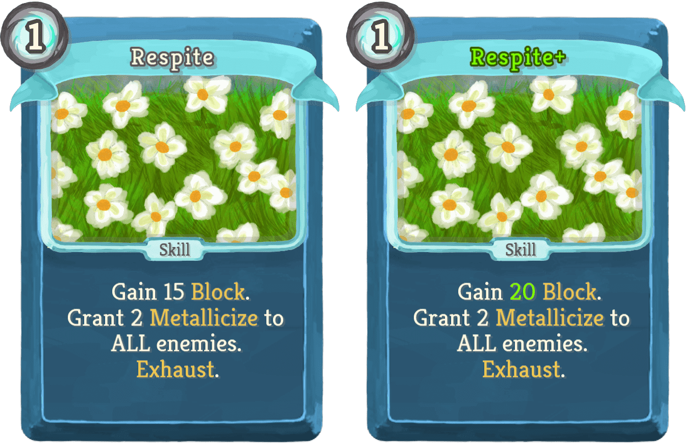 | Uncommon | Skill | 1 | Gain 15 (20) Block. Grant 2 Metallicize to ALL enemies. Exhaust. |
| Retribution |  | Uncommon | Power | 1 | Whenever you are attacked, gain 3 (5) Vigor. |
| Shields of the Fallen |  | Uncommon | Skill | 1 | Ethereal. Gain 5 (8) thetemplar:Bulwark. Draw a card. |
| Temperance | 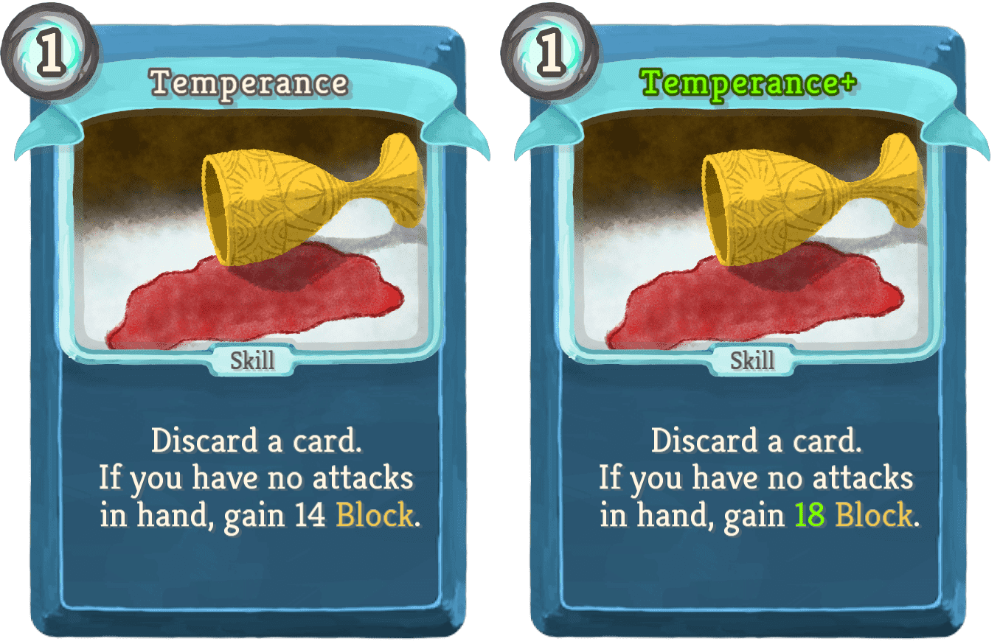 | Uncommon | Skill | 1 | Discard a card. If you have no attacks in hand, gain 14 (18) Block. |
| Thrill of Battle |  | Uncommon | Attack | 1 | Deal 4 (6) damage. Gain Vigor equal to the unblocked damage dealt. |
| Tithe |  | Uncommon | Skill | 0 | Lose 10 gold. Gain 2 (3) Regen. thetemplar:Inscribe 1 thetemplar:Charity. Exhaust. |
| Unwavering |  | Uncommon | Skill | 2 | Gain 6 (8) Block. Gain 6 (8) thetemplar:Bulwark. |
| Aegis |  | Rare | Power | 2 | thetemplar:Holy_Weapon. Gain 2 (4) thetemplar:Bulwark at the start of your turn. At the end of your turn, deal damage equal to your thetemplar:Bulwark to a random enemy. |
| Arbiter |  | Rare | Attack | X | thetemplar:Inscribe X (X+1) thetemplar:Justice. Deal 5 damage to ALL enemies. |
| Avenger | 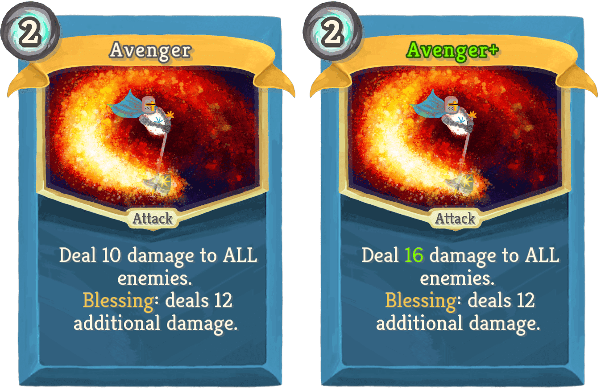 | Rare | Attack | 2 | Deal 10 (16) damage to ALL enemies. thetemplar:Blessing: deals 12 additional damage. |
| Book of the Five |  | Rare | Power | 2 | thetemplar:Holy_Weapon. The first 2 (3) times you thetemplar:Inscribe a glyph each turn, thetemplar:Inscribe an additional glyph of the same type. |
| Crusader |  | Rare | Attack | 2 | Deal 18 (25) damage. thetemplar:Blessing: Gain [E] [E]. |
| Dragonslayer |  | Rare | Attack | 2 | Deal 15 (20) damage. If the enemy is thetemplar:Empowered, deal double damage. |
| Flame of Heaven |  | Rare | Power | 2 | thetemplar:Holy_Weapon. Every time you play 5 cards in a single turn, gain 4 (6) Block and add a (an Upgraded) Fire of Conviction to your hand. |
| Hope Eternal |  | Rare | Skill | 1 | This turn, your next Attack or Skill is played twice. Exhaust. (not Exhaust.) thetemplar:Blessing: draw a card. |
| King Sword |  | Rare | Power | 2 | thetemplar:Holy_Weapon. Your Attacks apply 1 Vulnerable (and 1 Weak). Whenever you play an Attack, deal 3 damage to ALL enemies. |
| Lionheart |  | Rare | Attack | 3 | (thetemplar:Inscribe 1 thetemplar:Valor.)Deal 9 damage to a random enemy for each thetemplar:Valor thetemplar:Inscribed this combat. |
| Paragon Form |  | Rare | Power | 3 | Ethereal. (not Ethereal.) thetemplar:Blessing effects always trigger. Whenever you trigger a thetemplar:Blessing, draw a card. |
| Ringing Challenge |  | Rare | Skill | 2 (1) | Innate. Ethereal. ALL enemies become thetemplar:Empowered and grant thetemplar:Greater_Rewards at the end of combat. Exhaust. |
| Sacred Hammer |  | Rare | Power | 2 | thetemplar:Holy_Weapon. The first attack you play each turn deals double damage (and costs 0). |
| Squire |  | Rare | Skill | 1 | (Innate.)Choose a card in your draw pile. Add a copy of that card to your hand. |
| Staggering Awe | 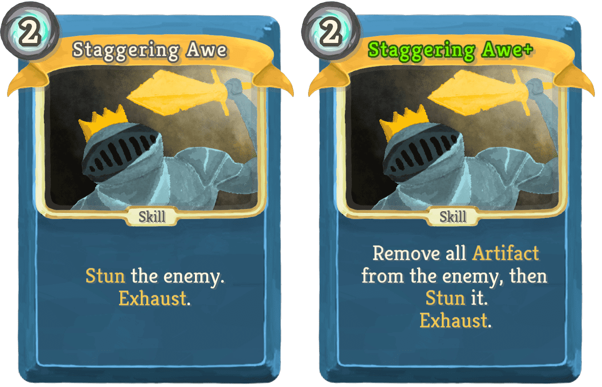 | Rare | Skill | 2 | Stun (Remove all Artifact from) the enemy (, then Stun it). Exhaust. |
| Vanguard |  | Rare | Attack | 1 | Gain 5 Block. Deal 5 damage. Permanently increase this card's Block and damage by 1 (2). Exhaust. |
| Virtue | 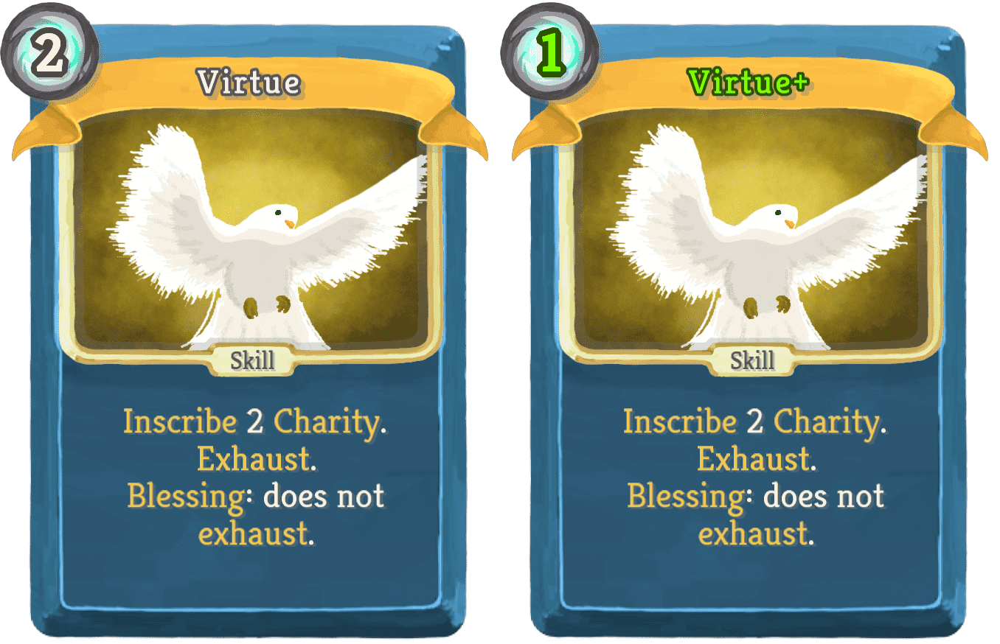 | Rare | Skill | 2 (1) | thetemplar:Inscribe 2 thetemplar:Charity. Exhaust. thetemplar:Blessing: does not exhaust. |
| Name | Image | Tier | Pool | Description | Flavor |
|---|
| Code Of Chivalry | 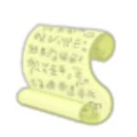 | Starter | Blessed_templar_blue | At the start of each combat, thetemplar:Inscribe1thetemplar:Valor. | A list of rules for a knight of the order to follow. |
| Dragon's Scale |  | Common | Blessed_templar_blue | Gain 1thetemplar:Bulwark at the start of each turn. | It glints in the light and feels slightly warm to the touch. |
| Fighter's Ring |  | Common | Blessed_templar_blue | Gain 2Vigor at the start of each turn. | You feel a very slight power emanating from this ring. Or do you? |
| Bottled Quicksilver | | Uncommon | Blessed_templar_blue | Choose a card. Whenever you play it, draw 1 card. | A mysterious liquid metal is sealed tightly inside. |
| Gilded Egg |  | Uncommon | Blessed_templar_blue | The next 2 times you add a Rare card to your deck, it is Upgraded. | The gold shell appears priceless. What riches could be inside? |
| King's Crown | | Rare | Blessed_templar_blue | Upon pickup, choose and add an Upgraded card to your deck. | The crown of his majesty, the sovereign king. |
| Reliquary |  | Rare | Blessed_templar_blue | The first 2 times you draw a Status or Curse each combat, Exhaust it and draw a card. | A sacred relic containing the remains of the First Templar. |
| Apocrypha | | Boss | Blessed_templar_blue | Replaces CodeofChivalry.thetemplar:Inscribe a random Glyph at the start of each turn. | Ancient texts, once lost, now ignored. |
| Divine Chalice | | Boss | Blessed_templar_blue | Start each combat with 3Regen,1Strength, and 1Dexterity. | Long lost and long sought after. |
| Prayer Beads | | Boss | Blessed_templar_blue | Gain [E] the first time you trigger a thetemplar:Blessing each turn. | Used in various liturgies and canticles of the order. |
| Runed Armor | 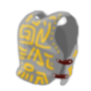 | Shop | Blessed_templar_blue | Doubles the effectiveness of your glyph match bonuses. | A breastplate with strangely glowing runes. |
{kind=link}
{kind=link}
{kind=link}
{kind=link}
{kind=link}
{kind=link}
{kind=link}
{kind=link}
{kind=link}
{kind=link}
{kind=link}
{kind=link}
{kind=link}
{kind=link}
{kind=link}
{kind=link}
{kind=link}


{kind=link}